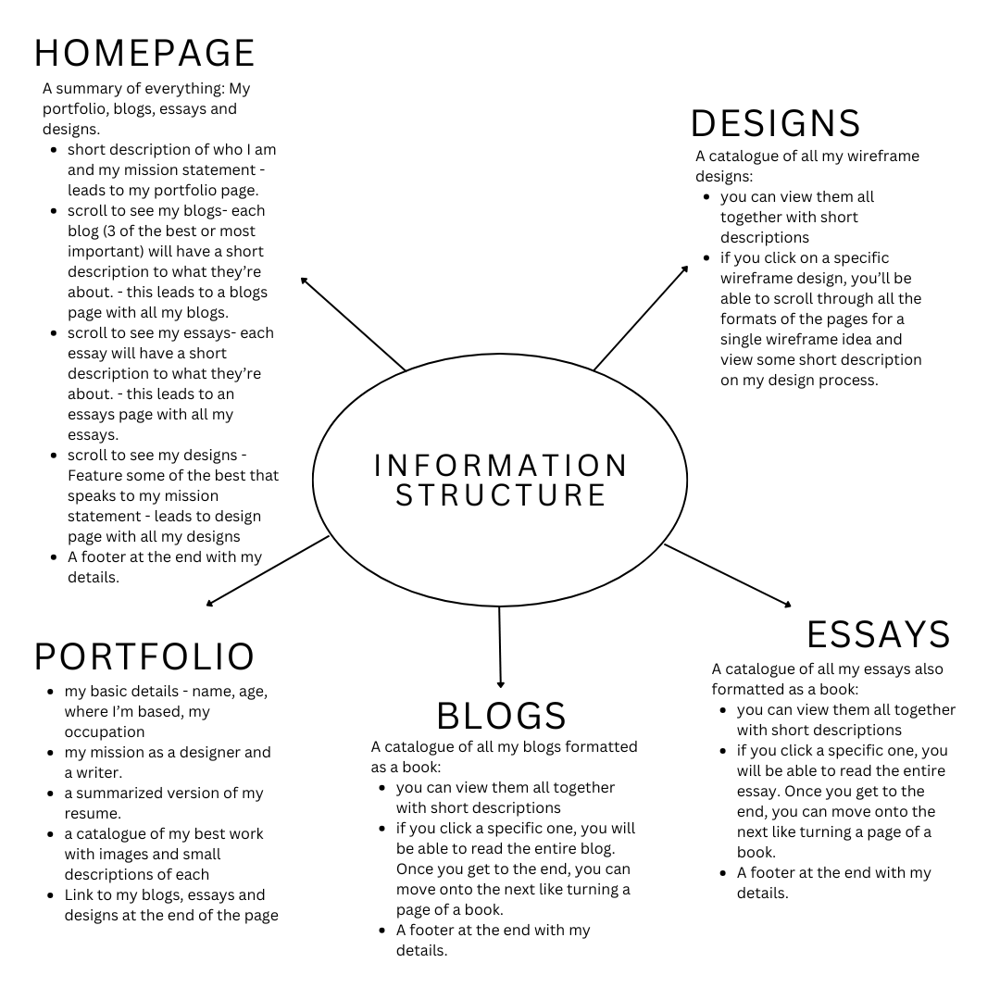
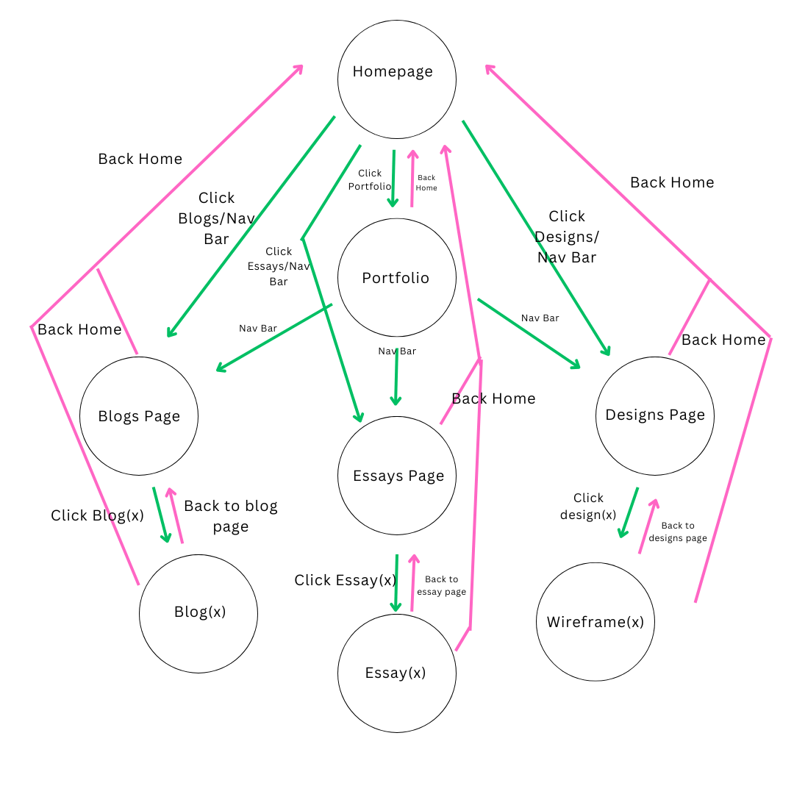
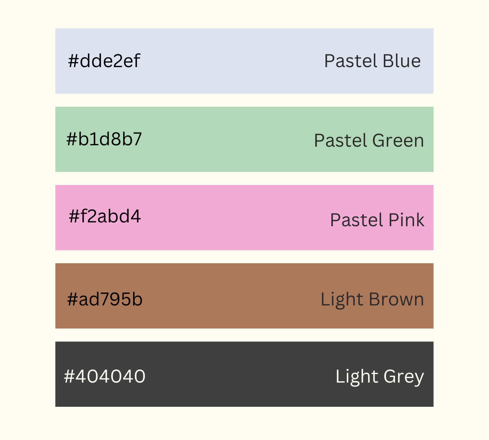
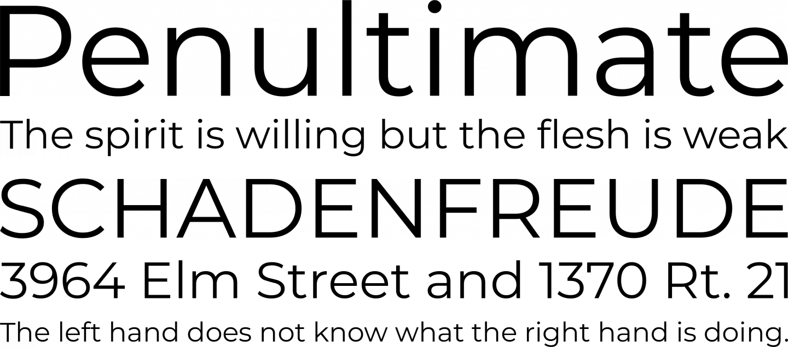
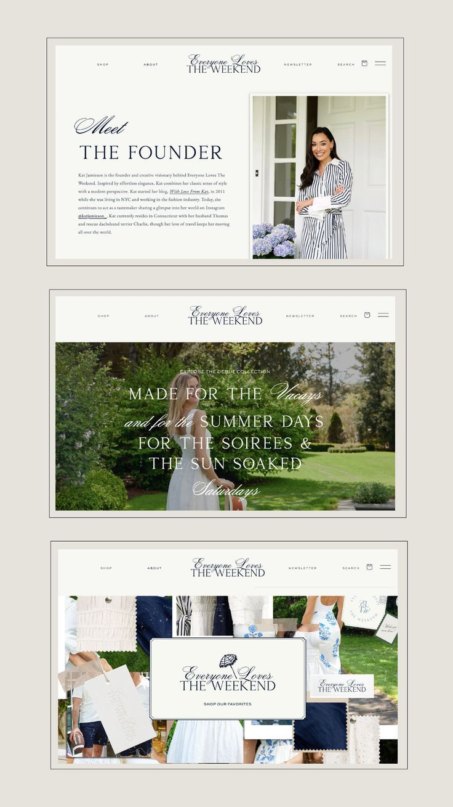
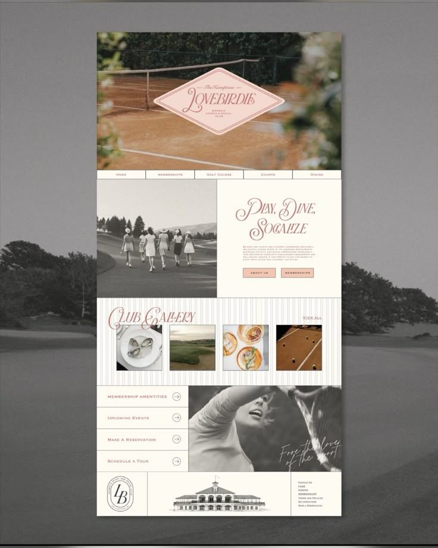
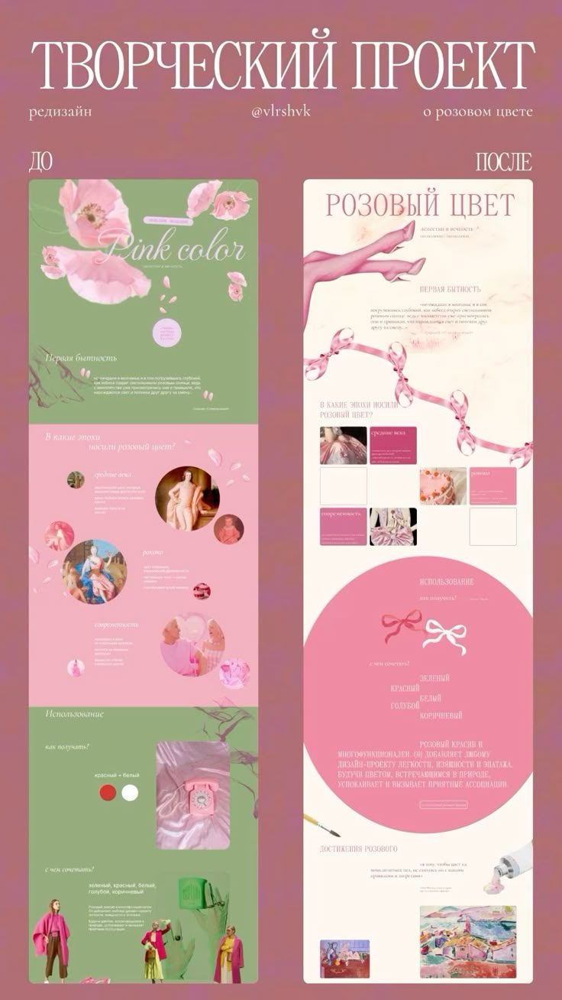
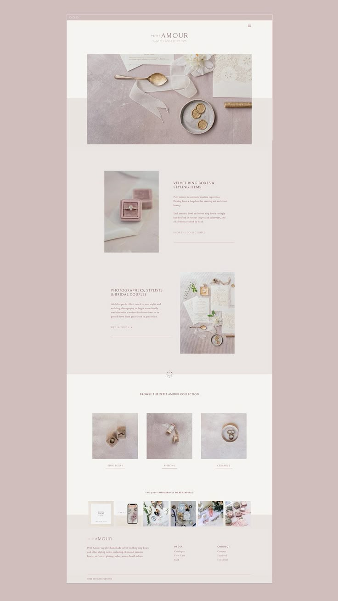
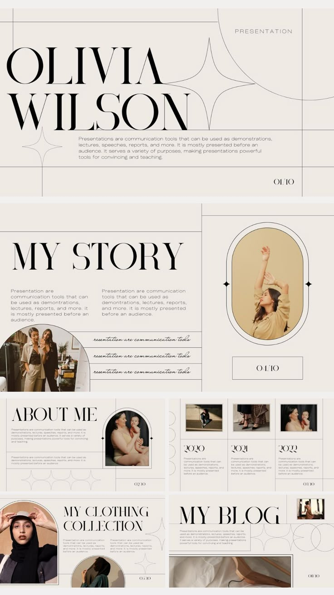

Week 5 Blog Post
Researching the Design Section of My Website
User Alignment:
Simply put, the goal of this website is showcase my expertise. I aim to show users to see who I am as a designer and my focus on children's literature. I want my users to be immersed in a world of creativity that is reminiscent of a child's imagination. I also want users to have confidence in my works that I will be able to create something creative and educational that is fulfilling to a child's creativity, that I will be able to assist in building those skills. I want users to be able to view my profile and portfolio that will give them that same confidence that they want instilled in their children. I also want them to be able to view all of my works, designs and thoughts behind the design process. My target audience is parents of young children in kindergarten and primary school. My target audience is also those who are working in educational institutions that would like to utilize my skills in developing sites or designing products for children. Their purpose on my website is to be able to view who I am as a writer and web and product designer and all the works I create for their children, which I think are imperative factors that they want to be able to see if they want to make use of my services. In general, I aim for this website to a testament to my abilities to give my target audience a vouch of trust.
Site Content:
My homepage should just be a summary of all the content I want to include. In the beginning, I want to include a warm introduction to who I am as a creative writer, web and product designer and highlighting my focus on children's creativity and educational development. This will form a part of my profile, leading to my portfolio. On the homepage want a section, a summary of my portfolio- this summary should be more focused on my mission statement on how I aim to influence young minds. If people wished to see more about this, they can follow the page to view my background, experience and my passion for children's literature and design. After this, there should also be a small section highlighting some of the written content, like my blogs and essays, where I share some insights to how I approach each project from a design perspective. Towards the end, there can be a small section for users to view some of my designs, consisting of the wireframe ideas I had. The most important part of my website is my introduction and my portfolio. Why I feel it is most important is because I want to build a relationship of trust with the user- that they can trust me with a service they require because they know me. The most interesting part of my site's content should be some of my works and my blogs. This I feel is going to set me apart from another designer by creating a sort of personality that a user can comprehend and relate to. It will also reinforce that relationship I aim to build with a user.
User Flow and Experience & Interface Elements:
Homepage = entry point
Warm introduction -> Creative Writer, Web & Product Designer
Summary of my portfolio and mission statement -> Influencing young minds through creativity
Summary of Blogs and Essays -> examples of my design approach
Small section showcasing wireframe ideas and designs
CTA at the footer
Homepage:
The summary of my website. - The essentials and the best of the best.
They may want to learn more about me -> Click "My Portfolio"
They may be interested in my insights -> Click "Blogs"
They may be interested in my long essays -> Click "Essays"
They may be interested in my wireframe designs -> Click "Designs"
Input controls: Buttons for "My Portfolio," "Blogs," "Essays," "Designs"
Navigational Components:
Navigation Bar: Home | Portfolio | Blogs | Essays | Designs
Breadcrumbs: "Home" - takes users back to home page.
Icons: For each section a user comes across that takes them to another page:
Portfolio -> Flower Icon, Blogs -> Lightbulb Icon, Essays -> Book Icon, Designs -> Pencil Icon
My portfolio:
Everything about me, my mission statement and work.
They may be interested in my insights -> Click link to "Blogs" OR use navigation bar.
They may be interested in my long essays -> Click link to "Essays" OR use navigation bar.
They may be interested in my wireframe designs -> Click link to "Designs" OR use navigation bar.
Input controls: Buttons for "Blogs," "Essays," "Designs"
Navigational Components:
Navigation Bar: Home | Portfolio | Blogs | Essays | Designs
Breadcrumbs: "Home" - takes users back to home page.
Informational Components:
Icons: For each section a user comes across that takes them to another page:
- Blogs -> Lightbulb Icon, - Essays -> Book Icon, Designs -> Pencil Icon
My Blogs:
A catalogue of all my blogs.
They may be interested in a specific blog -> Click on Blog 1 (They can page through each blog like a book.)
They may want to exit back to the blog page -> Click "Back to Blogs" OR use navigation bar to go back to Blogs page.
They may want to go back to the homepage -> Click "Home" OR use navigation bar to go back to Homepage.
Input controls: Buttons for each blog you can "Read more of "Blog(x)", "Back to Blogs"
Pagination: Allow viewers to page back or forward each blog.
Navigational Components:
Navigation Bar: Home | Portfolio | Blogs | Essays | Designs
Breadcrumbs: "Home" - takes users back to home page.
Slider: Scroll through featured blog posts
Informational Components:
Tooltips: Give user a small description when they hover over a blog.
My Essays:
A catalogue of all my essays.
They may be interested in a specific essay -> Click on Essay 1 (They can page through each essay like a book.)
They may want to exit back to the essay page -> Click "Back to Essays" OR use navigation bar to go back to Essays page.
They may want to go back to the homepage -> Click "Home" OR use navigation bar to go back to Homepage.
Input controls: Buttons for each blog you can "Read more of "Essay(x)", "Back to Essays"
Pagination: Allow viewers to page back or forward each blog.
Navigational Components:
Navigation Bar: Home | Portfolio | Blogs | Essays | Designs
Breadcrumbs: "Home" - takes users back to home page.
Informational Components:
Tooltips: Give user a small description when they hover over an essay.
My Designs:
A catalogue of all my wireframe ideas.
They may be interested in a specific wireframe -> Click on Wireframe 1 (They can page through each wireframe like a book.)
They may want to exit back to the wireframes page -> Click "Back to Wireframes" OR use navigation bar to go back to Wireframe page.
They may want to go back to the homepage -> Click "Home" OR use navigation bar to go back to Homepage.
Input controls: Buttons for each blog you can "See more of "Wireframe(x)", "Back to Designs"
Pagination: Allow viewers to page back or forward each wireframe.
Navigational Components:
Navigation Bar: Home | Portfolio | Blogs | Essays | Designs
Breadcrumbs: "Home" - takes users back to home page.
Informational Components:
Tooltips: Give user a small description when they hover over an essay.
Information Structure:
User Flow Flowchart:
Final Chosen Wireframes:
This was my INITIAL final concept. However, I realised that this design was too childish and the colors just did not match well. Which is why I created a SECOND final iteration.
After reviewing my first final concept for days on end, it occured to me that a simpler design was simply the best choice! I was able to incorporate that traditional and old storybook feel with the page background and the headings whilst also reminding the user that they were in fact on a website. This design makes use of simple illustrations (from canva) and softer colors.
Notes On Design:
Color Theory & Relationships:
I wanted to go for a pastel color palette on light blues, pinks and greens with a hint of browns and greys. In terms of structuring the pages (mimicking line breaks in fantasy books), backgrounds to illustrations (ovals/circles) and other illustrations will make use of this color palette. The texts around the pages will be a darkish grey, neutral tone, just so its light to the eye unlike the harshness of black. The pastel blue is a cool tone and its meant to evoke calmness and professionalism with sectioning parts of my website. The pastel green is also a cool tone with I feel represents growth and creativity which is ideal for the engagement I want from my users. The pastel pink is a warm tone is to add warmth and friendliness to create a welcoming atmosphere for my users. The brown hints is to complement the softer pastels for contrast. These pastel colors don't compete with each other since there is a variety of warm and cool tones which enhances clarity
Color Palette:
Compositional Hierarchy:
This website will make use of 2 fonts:
1 Serif - similar to New Times Roman: This font is generally used for headings in newspapers or books which generally grab attention which will fit the format of this website. This to contribute to the traditional and literary feel to my website. (Mainly for headings)
1 San-serif - Montserrat: This font is minimalistic which makes reading a lot more easier, which is beneficial considering the demographic of users that would view my website. This is to contrast the traditional headings in providing a more modern and minimal contrast to ensure readability. (Mainly for body text)
Montserrat Font:
Times New Roman Font:
In sectioning parts of the website, I make use of line breaks of a fantasy book aesthetic to mimic the traditional layout. This is to help guide the reader's eyes naturally. The shapes used are all rounded. These organic shapes help in creating a fluid composition unlike harsh angles that could disrupt the reading flow. Important content like headings and links are clearly larger than the smaller, detailed texts. This also includes other elements like images relating to the important content are aligned to the opposite side of the information to give the user's eyes a place to rest and to also support the information rather than overpowering it. All test will be aligned left to follow natural reading patterns. The CTA is placed at the bottom in the footer which is typically where CTAs are placed. The format of this website makes use of asymmetrical balance with floating illustrations and rounded backgrounds to those illustrations to create dynamism.
Website Inspiration:
Pinterest Inspiration 1 - What I liked about this website was how they structured their logo and navigation bar. I felt it was minimalistic which will make navigating my website much easier.
Pinterest Inspiration 2 - What I liked about this was its layout and how it makes use of images to break up the textual elements on the page.
Pinterest Inspiration 3 - What I really liked about this was the color palette. It has an earthy feel with the floral-esque pinks and greens. I thought its use to break up the spaces in the website was really effective and made the space feel full without having too things on the page.
Pinterest Inspiration 4 - This structure is similar to my website. The structure prioritizes information by having variations of font sizes and images and keeps everything aligned central to keep the left and right borders empty. I really liked how minimal this website was since it gives it a refined feel.
Pinterest Inspiration 5 - What I liked about it was how they structured the blog section. It blocked and has a small description below the image. This is something I'd like to implement into my website to give it that "reading material" feel, almost like a newspaper editorial.
